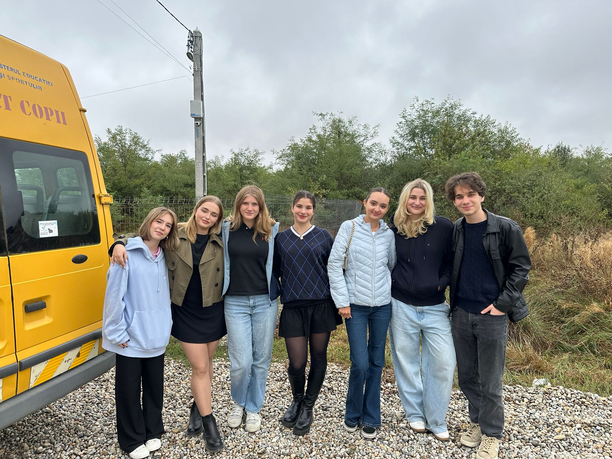
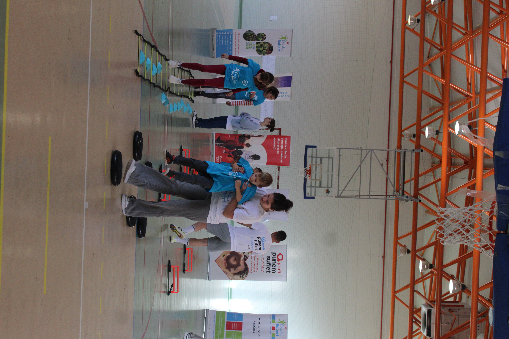
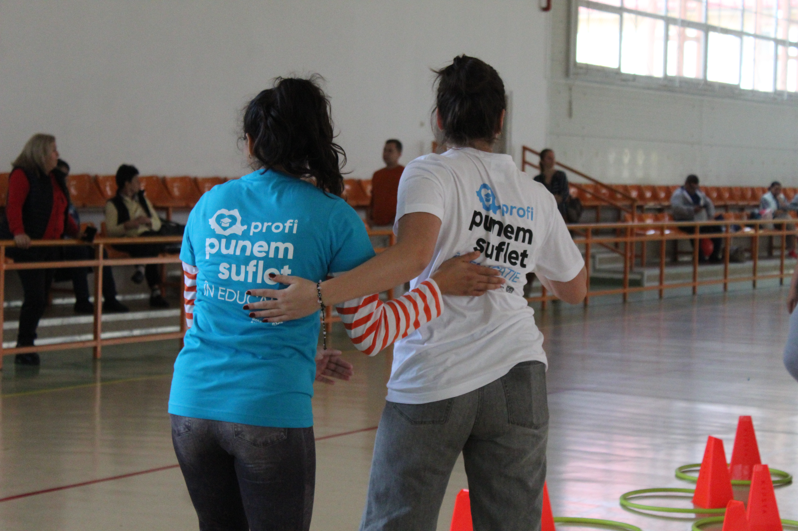
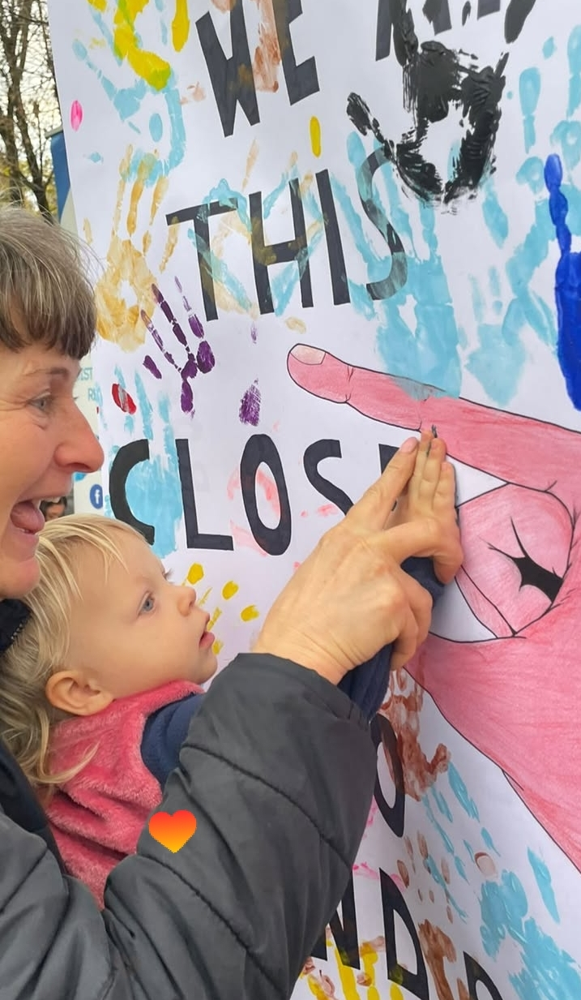

My Volunteering Journey
A story about growth, kindness, and the meaningful impact of volunteering.
About Me
Throughout my high school years, I have been an active volunteer in the Interact Abstract Baia Mare Club, a community that has shaped me both personally and professionally. Being part of this club meant more than simply taking part in projects: it meant becoming part of a family guided by empathy, initiative, and the desire to create real change.
During the 2024–2025 term, I had the honor of serving as Vice President, a role that taught me responsibility, leadership, and the importance of supporting others. It encouraged me to step beyond my comfort zone, organise complex projects, and work closely with people who shared the same purpose: helping those in need.
Why Should You Volunteer?
Volunteering is not only about giving, but also about connecting, growing, and discovering a deeper sense of purpose. In a world that often moves too quickly, volunteering reminds us to slow down and truly see the people around us.
It gives you the opportunity to become part of something greater than yourself. Whether you bring joy to a child, support an important cause, or simply offer your time and energy, every small action can create a wave of kindness. Sometimes, the difference you make in someone else’s life quietly changes your own as well.
The Benefits of Volunteering
Beyond the heartwarming moments and unforgettable memories, volunteering plays an important role in both personal and professional development.
Through this experience, people can develop essential skills such as communication, teamwork, leadership, and problem-solving, qualities that are valuable in any future career. Volunteering teaches you how to organize events, manage responsibilities, adapt to challenges, and collaborate with many different kinds of people.
At the same time, it helps build confidence and reveal personal strengths. It offers real-life experience, a stronger sense of direction, and valuable lessons that shape not only a student, but also a future professional.
Most importantly, volunteering helps shape character. It teaches empathy, responsibility, and the courage to make a difference, which are qualities that remain with us long after high school ends.
Moments from My Volunteering Experience
These photos capture some of the meaningful experiences, teamwork, and joyful moments that made my volunteering journey so special.



